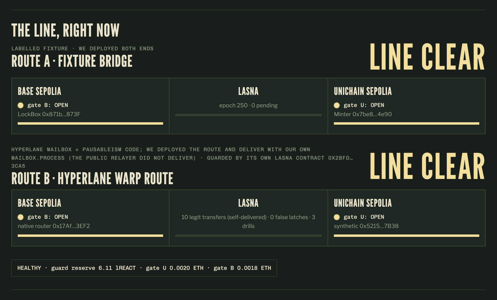
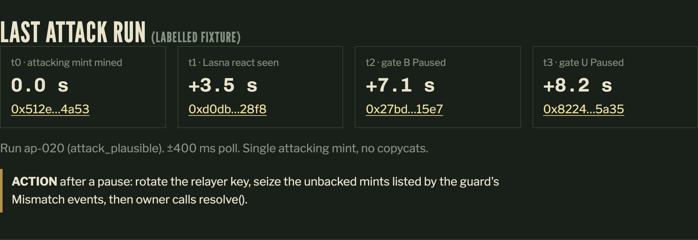
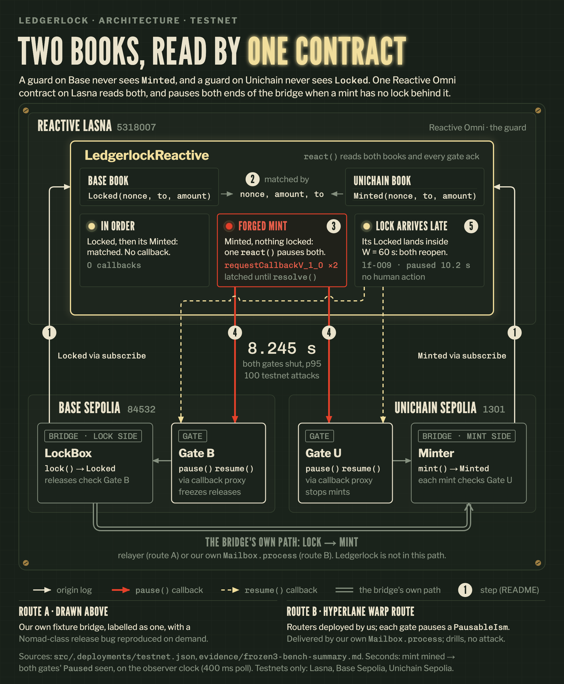

Pause first, match later
A Minted with no matching Locked pauses both gates from the same react(). A matching lock inside W reopens them. Matched traffic sends no callback.
DoraHacks · Reactive Omni Buildathon · Track: Every Second Counts
Picture Maya running a lock-and-mint bridge from Base to Unichain: neither chain can see the other's book. One Reactive contract on Lasna reads both; when a mint has no lock behind it, it shuts both ends. On our labelled fixture bridge: seen in 3.873 s (p50), both gates shut by 8.245 s (p95) over 100 attack runs, and 0 of 80 in-order transfers paused.
testnetlabelled fixture bridgeno wallet needed to verify846 triple rows committed113 Foundry tests
LockBox and gate B
book of locks · key 1515000: no lock
gate B Paused +4.651 s · 0x9994…3f38
LedgerlockReactive · one react()
Line blocked
react() seen +4.249 s · 2 callbacks · 0xca7e…28d0
Minter and gate U
forged mint · key 1515000: 500 tUSD · 0x3a28…372d
gate U Paused +5.341 s · 0x1c2f…087f
Next copycat mint 0x0e0c…a6d4: reverted GatePaused, in the same Unichain block as the pause, one position after it.
both gates shut, p95 of 100 attack runs
evidence/frozen3-bench-summary.mdin-order legitimate transfers paused
evidence/frozen3-bench-summary.mdcopycat mint landed before the gate shut, in each of 20 burst runs
evidence/frozen3-bench-runs.csvtriple rows joined from chain logs: 636 origin, 210 owner resolve(); 500 with a gate callback
evidence/frozen3-triples.csvScene 01 · The forged mint
Run bu-015: 500 tUSD minted on Unichain Sepolia with nothing locked on Base Sepolia. Every row opens in a public explorer.


The status page on live testnet RPCs, captured 13 Nov 2026 (UTC). Its last non-control attack run is ap‑020; the replay is bu-015.
# bu-015 · evidence/frozen3-bench-runs.csv · observer clock +0.000 s mint unichain 0x3a28…372d 500 tUSD, no lock +4.249 s react() lasna 0xca7e…28d0 2 pause callbacks +4.651 s Paused base 0x9994…3f38 gate B +5.341 s Paused unichain 0x1c2f…087f gate U copycat unichain 0x0e0c…a6d4 reverted GatePaused release base 0x58c2…e3f9 carry-home reverted exposure 500 tUSD · recovery (seize, resolve, both gates reopened) 13.592 s $ pnpm bench:summary {"attacks":100,"detection":{"n":100,"p50":3.873,"p95":4.391,"max":6.545,"min":2.036},"pause_both":{"n":100,"p50":5.92,"p95":8.245,"max":10.97,"min":3.851},"strict_false":0} $ forge test Ran 6 test suites: 113 tests passed, 0 failed, 0 skipped (113 total tests)
| Observer | Chain | Movement | Transaction |
|---|---|---|---|
| +0.000 s | Unichain Sepolia | Forged Minted, 500 tUSD; no Locked on Base | 0x3a28…372d |
| +4.249 s | Lasna | react() requests two pause callbacks | 0xca7e…28d0 |
| +4.651 s | Base Sepolia | Gate B Paused: releases frozen | 0x9994…3f38 |
| +5.341 s | Unichain Sepolia | Gate U Paused: mints stop | 0x1c2f…087f |
| same block | Unichain Sepolia | Copycat mint reverts GatePaused | 0x0e0c…a6d4 |
| after | Base Sepolia | The attacker's carry-home release reverts | 0x58c2…e3f9 |
All 846 rows and the script that joins them are in the repo.
Seconds from the forged mint until both gates had shut: 60 forged keys, 20 plausible keys, 20 bursts. Nothing excluded.
detection p50 3.873 s · p95 4.391 sgate B p50 3.378 s · p95 7.079 sgate U p50 5.917 s · p95 8.245 son-chain check (Unichain block timestamps) p50 2 s · p95 3 s
A0, an unguarded copy of route A · 5 runs · per run
A, guarded · bu-021 to bu-025 · per run
Same attack script in both arms (one forged 500 tUSD mint), different copycat schedules: the unguarded arm fires a fixed 6 copycats, the guarded one up to 30, so issuance is an illustration, not a rate. Rows: evidence/a0-control-runs.csv, evidence/frozen3-bench-runs.csv.
Scene 02 · The interlock
A guard on Base never sees Minted; a guard on Unichain never sees Locked. Reactive Omni lets one contract on Lasna subscribe to both and answer on both.
A Minted with no matching Locked pauses both gates from the same react(). A matching lock inside W reopens them. Matched traffic sends no callback.
Locked on Base Sepolia, Minted on Unichain Sepolia, plus Burned and Released for the way back.
Forged keys pause once, then latch. Only the owner's resolve() reopens the route.
A failed callback is retried once, then reported as GateUnreachable.
Each gate flips the bridge's own pause switch; on route B, a Hyperlane PausableIsm.

docs/architecture.svg.Scene 03 · What it does not do
Mints that land before the pause are lost. The guard does not prevent the first one.README · Honest limits #2
Route A is our own fixture with a deliberately reproduced bug class. Route B is our own warp route andPausableIsm, delivered by our ownMailbox.process, not a third-party relayer.README · Honest limits #5
Nothing pages the operator. A latched route stays shut until someone looks; theIncidentLatchedandGateUnreachableevents are the signals to watch.README · Honest limits #8
All nine limits are in the README, including what happens if Lasna itself stops.
Questions a judge would ask
No. The forged mint is what trips the guard, so it always lands. The claim: loss is at most the mints inside the measured pause window. In 20 burst runs, at most one copycat landed per run.
A contract on Base never sees Unichain's Minted; one on Unichain never sees Base's Locked. One reactive contract on Lasna reads both and sends both pause callbacks from one react(). No off-chain watcher in the loop.
By our off-chain observer, polling public RPCs every 400 ms, from the forged mint's receipt to each log. On-chain cross-check, Unichain block timestamps from mint to gate U Paused: p50 2 s, p95 3 s.
Every transaction is real, on Base Sepolia, Unichain Sepolia and Lasna. Route A is our own fixture bridge with a stolen relayer key reproduced on purpose. Route B is a Hyperlane warp route we deployed and deliver ourselves. Reorgs: Test Lib simulation only.
The gates pause, then reopen by themselves when the matching Locked arrives inside W = 60 s. We forced 20: paused p50 15.2 s, p95 23.1 s (19 rows have a duration). Of 80 in normal order, none paused.
Yes, by design. A forger who picks a plausible nonce holds the route shut until the owner resolves it. Ledgerlock fails closed: legitimate mints wait.